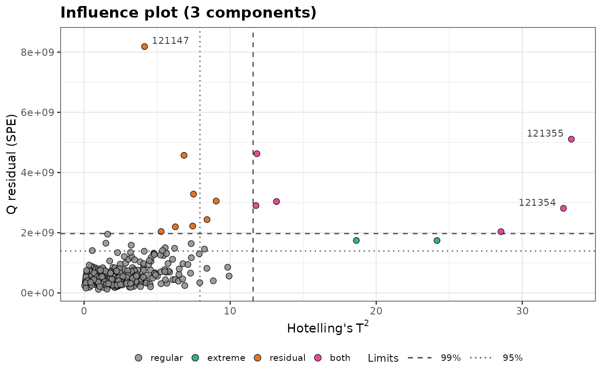
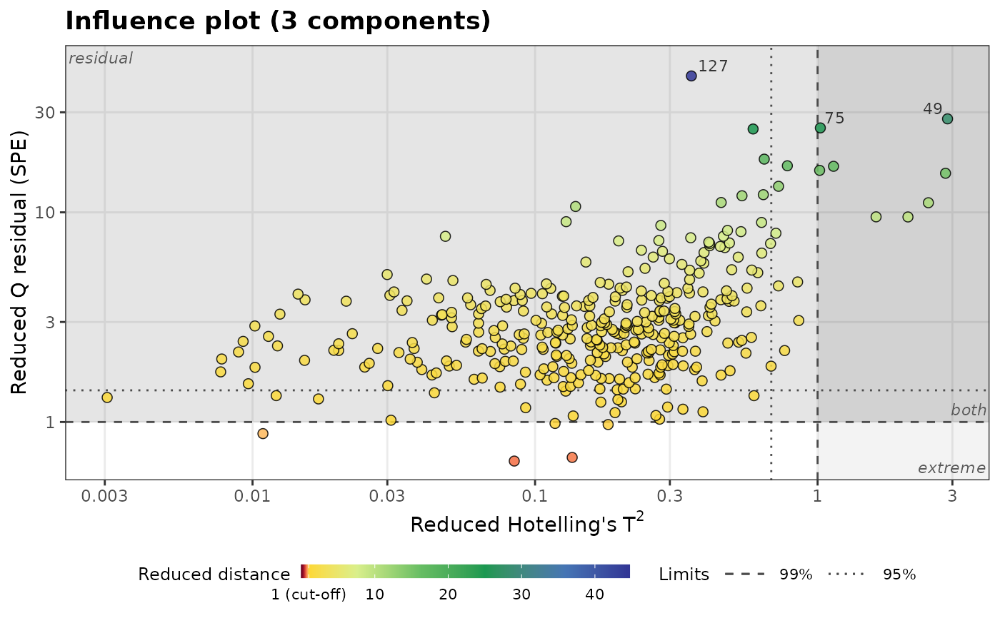
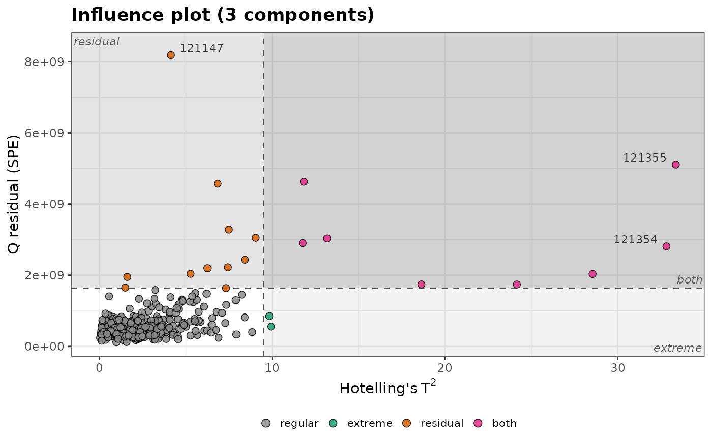

Plots the residual distance of each sample to a PCA model (Q residual or
DModX) against its Hotelling's \(T^2\), with their limits at each
confidence level, from q_residuals() or dmodx(). It is drawn like the
outlier map of a robust PCA, plot_outlier_map().
Usage
plot_influence(
x,
label = NULL,
labels = 3,
relative = FALSE,
shade = FALSE,
log = FALSE,
colour_by = c("type", "distance"),
title = NULL,
...
)Arguments
- x
The result of
q_residuals()ordmodx().- label
The names of the samples: a vector with one value per sample. By default, their row numbers.
- labels
The number of most outlying samples to label (beyond a limit at the highest confidence level). Default is 3; use 0 for no labels.
- relative
If
TRUE, plot the distances divided by their limits at the highest confidence level. Default isFALSE.- shade
If
TRUE, shade the three outlying regions in grey, darker for more harmful samples (extreme, residual, both), and name them in their corners. Default isFALSE.- log
If
TRUE, use logarithmic axes, which spread out the regular samples when a few are far away. Zero distances are drawn at the smallest positive distance. Default isFALSE.- colour_by
The colors of the points:
"type"(default), by type, or"distance", by their distance relative to the limits, \(\max(T^2/T^2_{lim}, Q/Q_{lim})\), on a rainbow scale from dark red to blue, as inplot_outlier_map().- title
The plot title.
- ...
Further arguments passed to
ggplot2::geom_point()to style the points, such asalpha(default 0.85),size(2.2),stroke(0.4) orcolour(the outline,"black").sizecan also be a numeric vector with one value per sample, such as the concentration of an element, to vary the size of the points, with a legend.
Details
The limits at the highest confidence level (dashed lines) divide the plot into four types of samples:
regular samples (bottom left);
extreme samples (bottom right): a high \(T^2\) but well described by the model, for example a high concentration;
residual samples (top left): not described by the model (another matrix, a contamination, an instrumental problem);
samples beyond both limits, the most harmful.
The limits at lower confidence levels are dotted, dot-dashed, ... lines.
With relative = TRUE, each distance is divided by its limit at the
highest confidence level, so both limits are at 1 whatever the model,
which puts plots of different models on the same scale.
Examples
data(forageLIBS)
pca <- stats::prcomp(forageLIBS[-(1:14)])
influence <- q_residuals(pca, k = 3, conf_level = c(0.95, 0.99))
plot_influence(influence, label = forageLIBS$Measurement)

# the same options as plot_outlier_map(): distances relative to the limits,
# shaded outlying regions, logarithmic axes and colors by distance
plot_influence(influence, relative = TRUE, shade = TRUE, log = TRUE, colour_by = "distance")

# a single limit at 97.5%, with the outlying regions shaded
influence_975 <- q_residuals(pca, k = 3, conf_level = 0.975)
plot_influence(influence_975, label = forageLIBS$Measurement, shade = TRUE)
